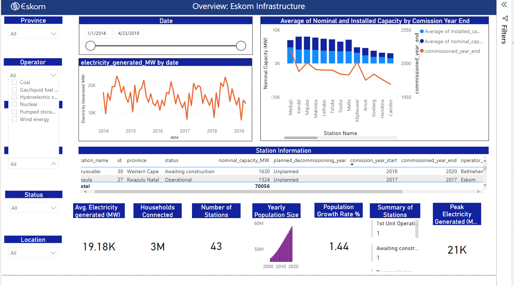
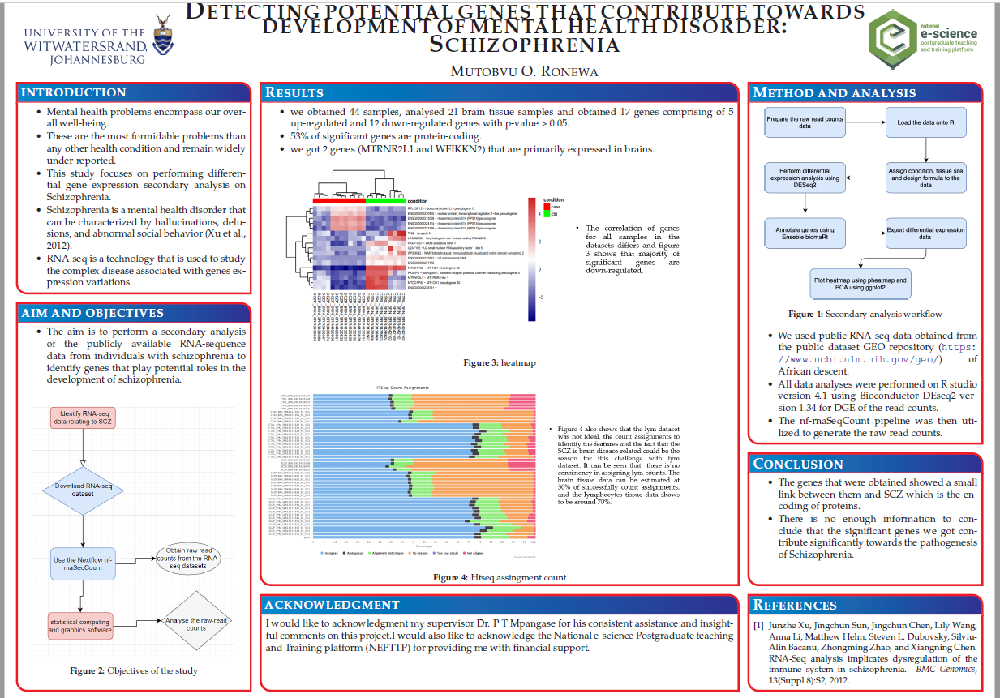
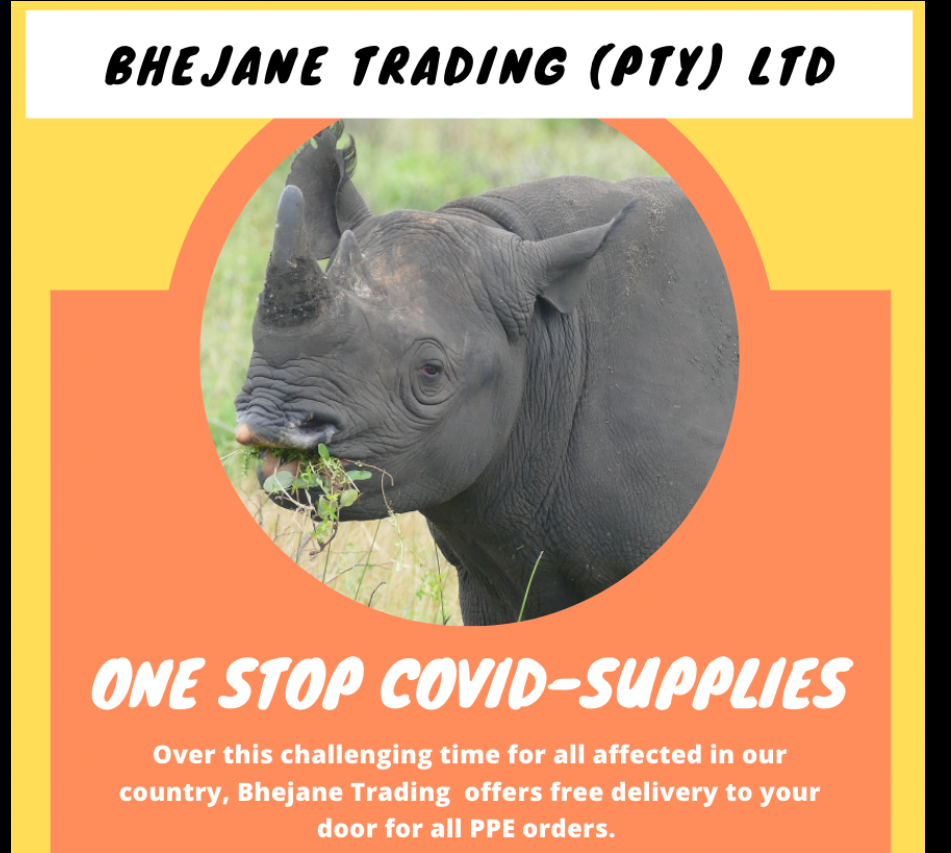
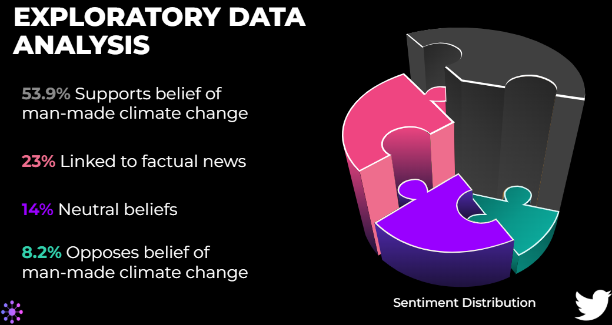

The purpose was to test out several Power BI data interfaces. Repair a "broken" dashboard, clean, convert, and format supplied data, and create fresh visuals. The Eskom data was utilized to create the following informative dashboard in order to get the necessary understanding. The dashboard has been worked on, with relationships being fixed and the required images being made.

In this project, NLP techniques are used to clean up the data. The folloiwing algoritms were utilised Logistic Regression, Passive Aggression Classifier, Naive Bayes Classifiers such as BernolliNB, MultinomialNB, and ComplimentNB. All of these models were evaluated using the matrix and also the ensambing stacking was utilised however BernoulliNB, Logistic Regression and MultinomialNB appearered to be performing better in language than the other ones since they all hold a higher accuracy score of 1.

This project was a bioinformatics problem. Despite extensive investigations of the genetic mechanism of Schizophrenia, there
was no clear indication of the known underlying genetic mechanism of
schizophrenia in the general population worldwide. Even though some studies
suggest an underlying gene expression disturbance in many genes, the underlying
genetic mechanism of schizophrenia was still poorly understood. This project focused on performing a secondary analysis of the publicly available
RNA-sequence data from individuals with schizophrenia to identify genes that play
potential roles in the pathogenesis of schizophrenia using R-language.

This project is an individual project, I was tasked with the objective of normalizing the database of the
store’s inventory management system. I was provided with provided with an unnormalised database, and was expected to normalise it's contents to bring it into 3rd
Normal Form (3NF). After having normalised the DB, I was required to answer several multiple-choice questions which was to ensure if i have completed the work, and also testing my practical SQL skills gained. I passed the test with 100% after programming using SQL to obtain the answers

This was a team collaboration project. This project required a machine learning model with the ability to classify sentiment amongst tweet data using NLP language. Looking at the distribution and the polarity while exploring the data, we have discovered that most people believe in man-made climate change. This is due to the tweets that support the unfavorable impression of using a positive and negative vocabulary. Noting that the pro sentiment has more tweets than any other sentiment. In the Data Engineering section, we have covered various techniques for cleaning text data, as well as vectorization used for feature extraction. It is always necessary to perform this process before taking on the modeling phase. The goal of this project was to focus on sentiment analysis relating to climate change.
As a team, we decided to take a multi-model approach.
We then built a user-friendly APP for the goal of classification! To conclude, the team created models that will aid in this process of important decision-making. This will aid in informing companies of any trends and patterns of the world’s view on climate change, and whether any decisions made, based on the trends, will have any impact at all
In this project we were tasked to model the shortfall between the energy generated by means of fossil fuels and various renewable sources - for the country of Spain. The daily shortfall, which was referred to as the target variable, was modelled as a function of various city-specific weather features such as pressure, wind speed, humidity, etc. As with all data science projects, the provided features are rarely adequate predictors of the target variable. As such, you are required to perform feature engineering to ensure that you will be able to accurately model Spain's three hourly shortfalls. After cleaning the data and modelling, We were able to infer that the Random Forest model is the suitable model that the government of Spain can use to accurately predict the three hourly load shortfalls. This conclusion was drawn from observing the model's performance and comparing them.

This was a collaboration teamwork. In this project unsupervised learning was utilised however it was mainly focused on creating recommendation system models and building an app that will help keeps clients engaged and delighlighted with the choice of subscription to Netflix. we used content based and collaborative filters to build our models and streamlit app.
Our expertise and tried-and-tested 5-step methodology were used to create an elegant product which is based on collaborative filtering.
We are convinced that this system will provide you with additional competitive advantage over your closest rivals; Netflix could become the only major movie streaming service to be armed with this effective mechanism.
While Netflix pushes to reach an increasingly broad audience, by including a greater variety of content, you will now also be able to reverse the financial setbacks that have been caused by the recent decline in subscribers.
This was a team collaboration project prediting rge soccer matches using machine learning approach. Using previous data of ten seasons to predict future matches, we made use of classifiers (KNN and XGB)
and the prediction using KNN showed 53.33% accuracy and XGB showed 46.67% accuracy. KNN is fairly
good in predicting the games. With more information about each game from the past 10 years, we built
a moderate accurate model. intuitively, teams with good attacking strength and defending strength are
more likely to finish in a good position in a league. According to the results the chances of winning as a
home team are greater than the chances of winning as away team since the average goal scored for
home teams is greater than the average goal scored by away team. Additionally, we presume that it
might be due to home advantages such as familiarity of pitch, home team weather conditions,
spectators, etc. finally , given enough data set with relevant features it is possible to predict future
matches.